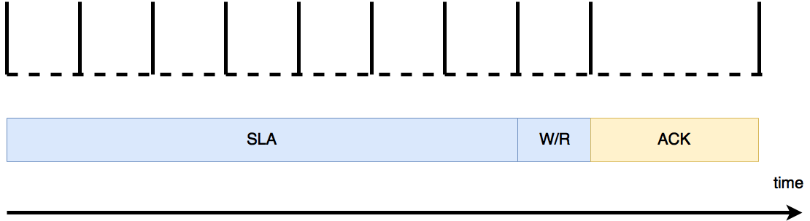

Introduction
i2c is 2 wire synchronous serial half-duplex master-slave comminucation protocol invented by Philips Semiconductor. TWI is a Atmel technology that compatible with i2c.
Two wires
- SDA (data line): bi-directional, pull-up register
- SCL (clock line): bi-directional, pull-up register
No slave select line, slave is select based on address.
Tread-off: slave has to pre-configure an address, and usually this address is fixed, which means a i2c cannot support two same devices, e.g. two temperature sensors
Pull-up register
All of the devices are tri-state generates high. Any of the devices is low level would generates low.
SDA & SCL states: high: devices are either input or output high ;low: one of them output low.
Transfer protocol
Master generates clock signal. Slave can delay SCL by pull SCL low (output 0)
- start condition: change data line from high to low when clock is high.
- Repeated start condition: change data line from high to low when clock is high after a start condition but before a stop condition.
- stop condition: change data line from low to high when clock is high.
- data bit: data bit should stable when clock is high ( sample not on edge, but on level)
Why data bit is set when SCL is high, instead of low or a edge?
This is a smart design because the SCL is open-drain, any device, including slaves, can set this SCL low. By setting SCL low, it means the communication (data transfer) is prolonged, so the slave can earn more time to processing.
Repeated start
During one transaction, a start condition is invoked. And followed by slave address and then data, finally, a stop condition. So one transaction only allowes to communicate with a single slave. But the master can directly issue a new start condition and without stop condition (since stop condtion would relinquish this bus, and the master may not expect that). In this case, the bus is always considered as busy, other masters cannot use this bus. Then current master can issue a new SLA to communicate with another slave.
There can be several repeated start, but only one stop is needed.
Address format
Address format composes of 9 bits. 7 bit address (SLA) + 1 bit indicate operation (w/r) + 1 bit ACK. The SLA and w/r are generated by master, ACK is generate by slave.
* The time for one bit can be different. For example, the slave may delay ACK by pull-up the SCL. During SCL is low, the i2c's SDA is static.

ACK 0 means agree, 1 means deny
0000 000 is reserved for a general call, broadcast. Only write mode is meaningful; 1111 xxx is reserved for future purpose.
Data format
Data format also composes of 9 bits. 8 bit data (generated by transmitter) and 1 bit ack (generated by receiver)
Lost Arbitration (失去对SDA or SCL的控制)
I2C support multi-master. When master transmits data, it also listens to SDA and SCL to check whether the values on these two lines are they expect. Because low level always wins, a master lost arbitration if it can't get a certain line to go high. And it needs to back off and wait until a stop condition is seen before making another attempt to start transmitting.